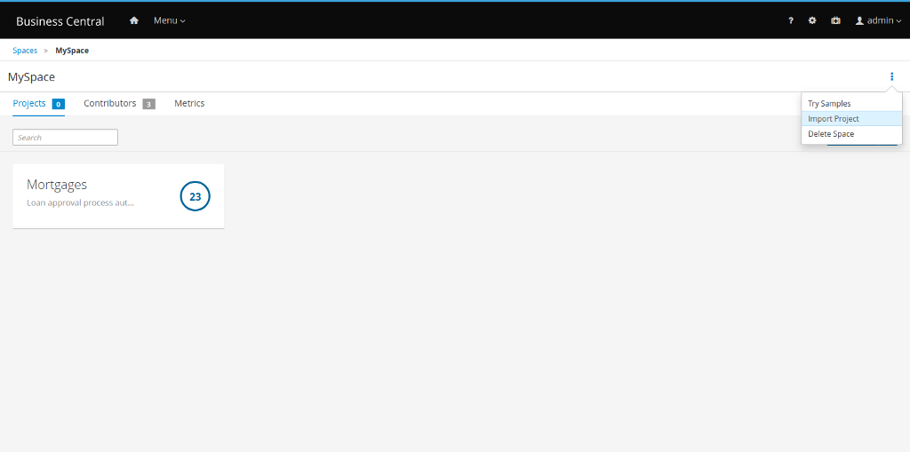
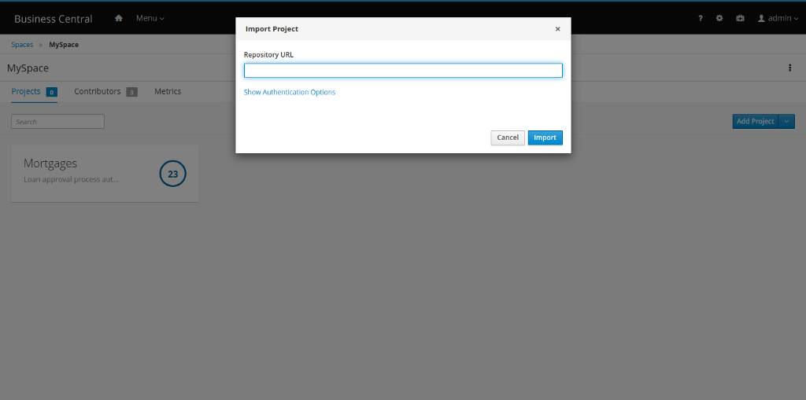
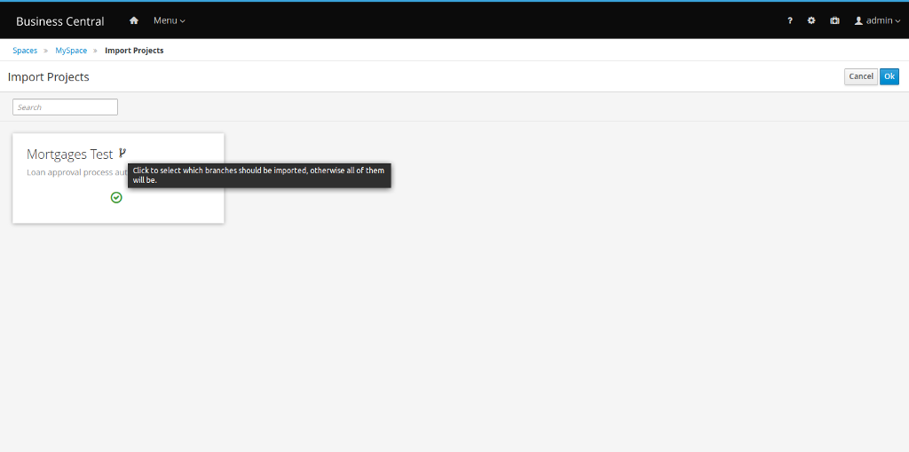
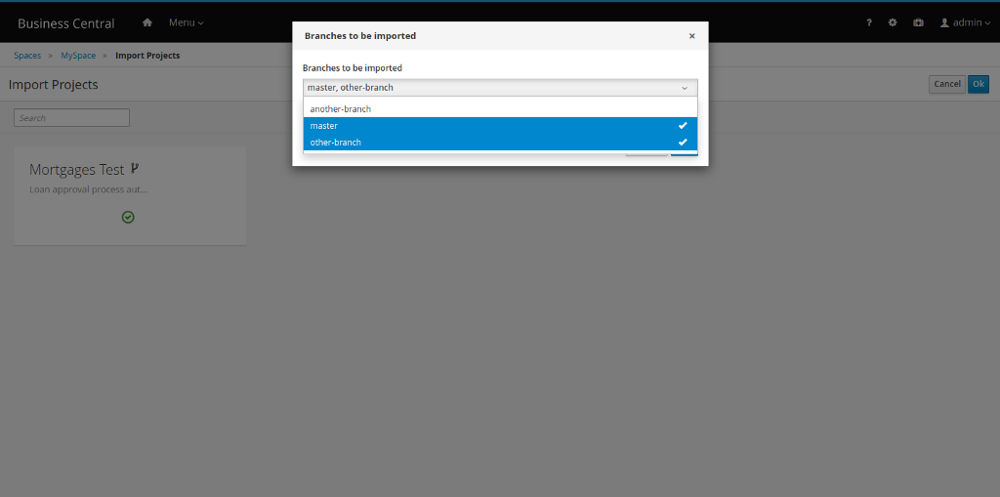
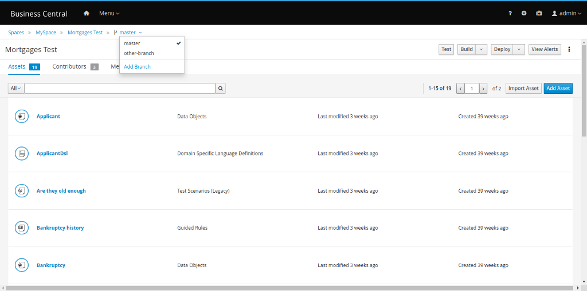

Importing a subset of branches into Business Central
Recently we added a new feature in Business Central: the option to choose which branches to import while importing a project.
When importing projects from a repository, you can select only the branches that you want to persist in Business Central.
- In Business Central, click Menu → Design → Projects.
- Select or create the space into which you want to import the project. The default space is MySpace.
- Click the three dots on the right side of the screen and select Import Project.

In the Import Project window, enter the URL and credentials for the Git repository that contains the project that you want to import and click Import.

After clicking on Import, all projects found in that repository will be listed:

On the right side of each project name, click on the branch icon. Select the branches that you want to import.

Only the selected branches are persisted:

To conclude, here is a video demonstrating the steps detailed above:
https://medium.com/media/fb8f87076510e9c6dc3758df03d6df82/href
Importing a subset of branches into Business Central was originally published in kie-tooling on Medium, where people are continuing the conversation by highlighting and responding to this story.